Small Jobs • Big Results
Handyman
services in
Salisbury
Doors, windows, flooring, trim, decks and siding — done right, the first time. No job is too small.
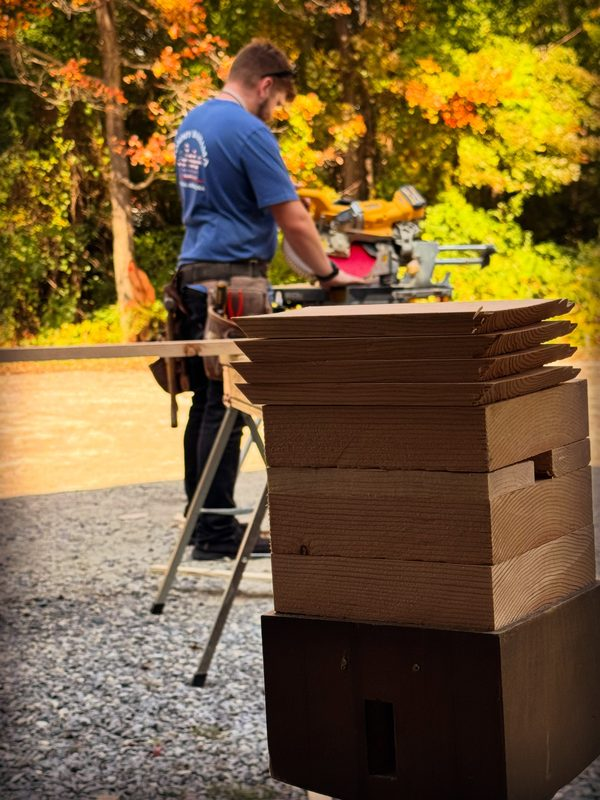
Services
What gets done
-
01
Doors
Interior and exterior doors hung, replaced and adjusted — locks, handles and weatherstripping included, with clean transitions down to existing flooring.
-
02
Windows
Window replacement, repair and sealing to keep the weather out and the heat in.
-
03
Floating Flooring
Laminate and vinyl plank floors laid clean and level, room by room.
-
04
Trim & Finish Carpentry
Baseboard, casing, crown and finish work with tight joints and a paint-ready surface.
-
05
Decks
Deck boards, stairs, railings and repairs — built to stand up to New England weather.
-
06
Siding
Siding repair and replacement to keep a house sealed and looking sharp.
-
07
Railings
Interior stair rails and exterior deck railings — added for safety, or replaced where they’ve failed.
-
08
Sheds & Outbuildings
Shed doors built to fit the opening, lean-tos enclosed, barn doors sized, hung and trimmed out.
-
09
Shelving & Storage
Built-in basement and garage shelving that turns clutter into usable space.
Recent Jobs
The work
Hover a Before → After tile to see the finished job, or open any photo for a closer look.
-
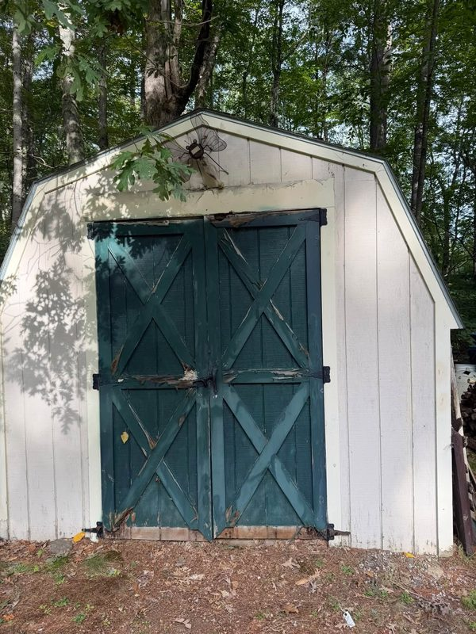
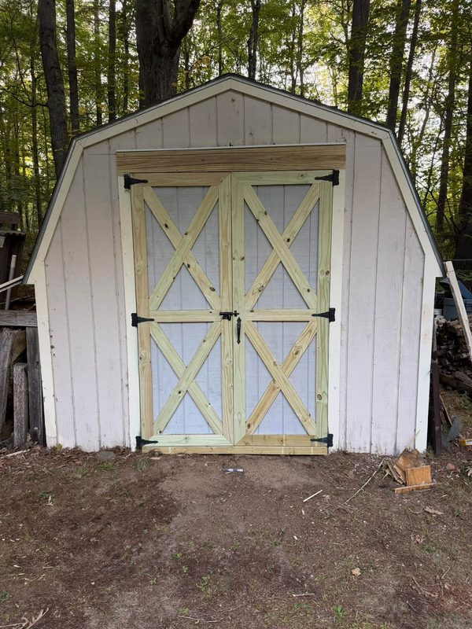
Shed doors rebuilt -
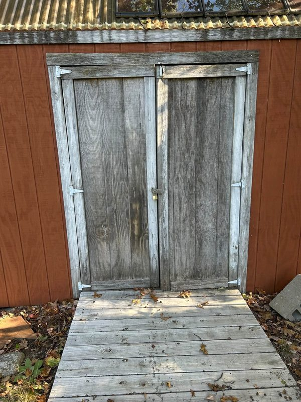
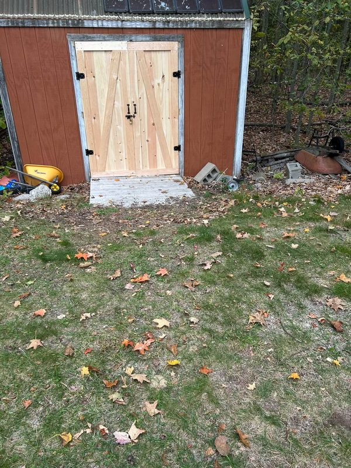
Shed doors replaced -
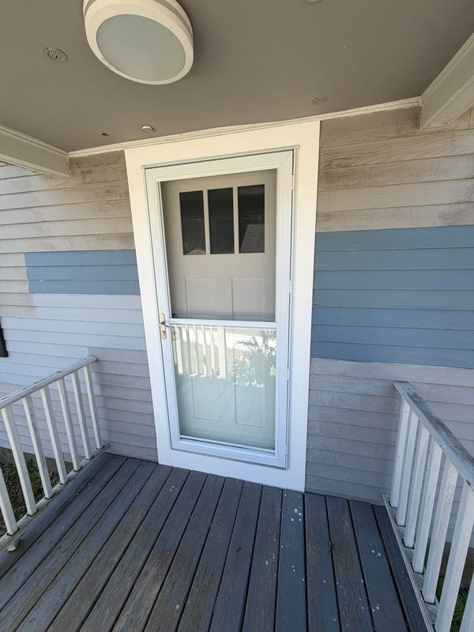
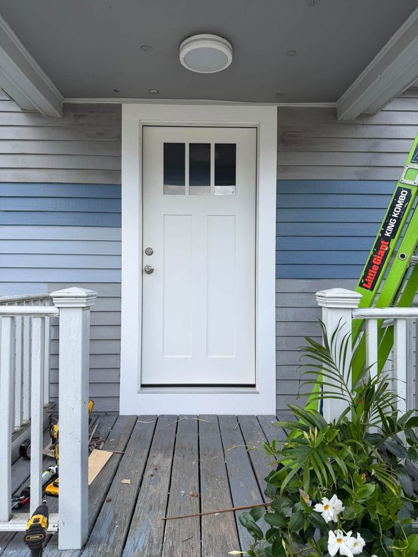
Storm door replaced with a new entry door -
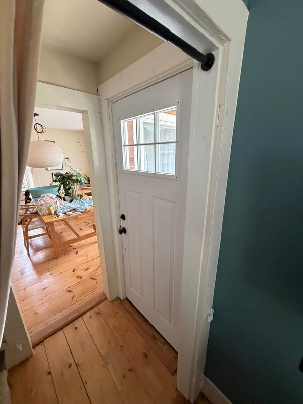
Barn door sized, hung and trimmed out -
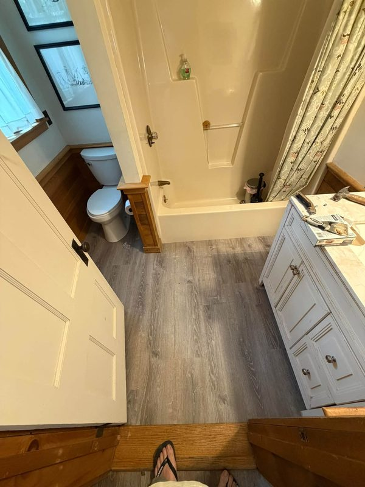
Floating floor in a first-floor bathroom -
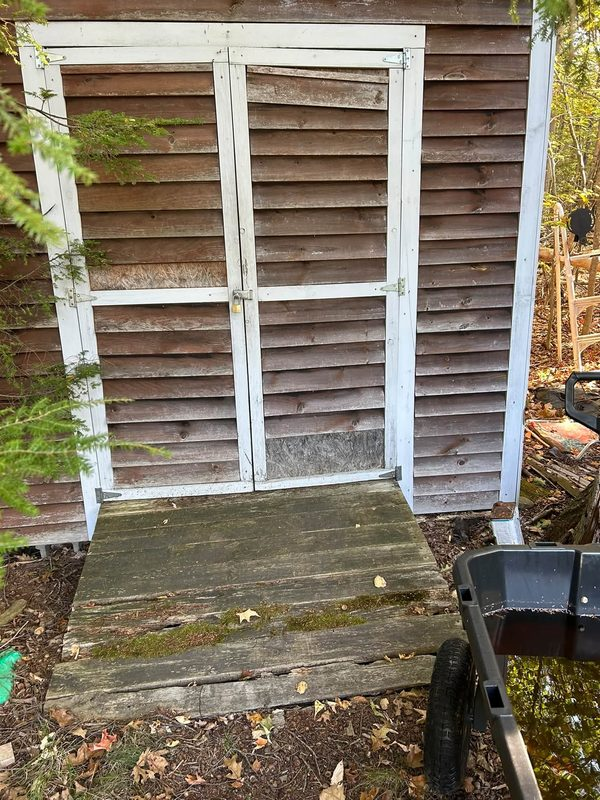
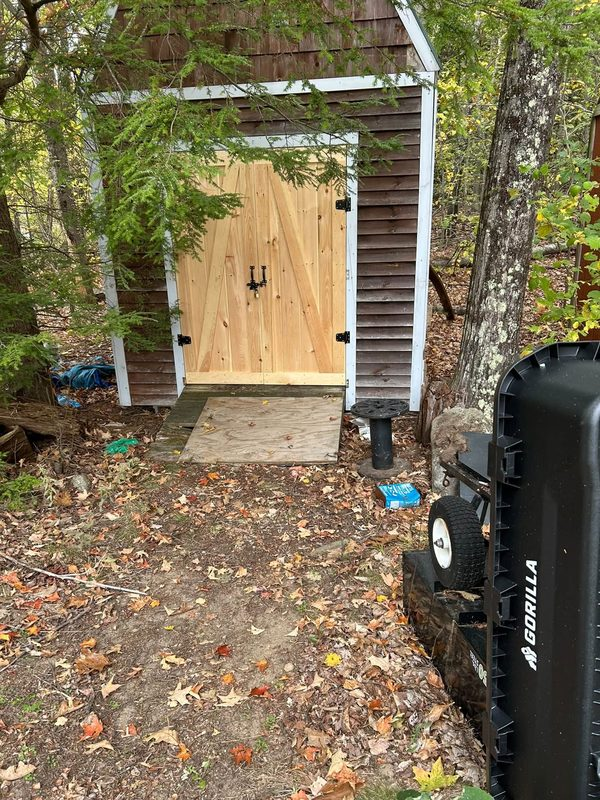
Shed door and ramp rebuilt -
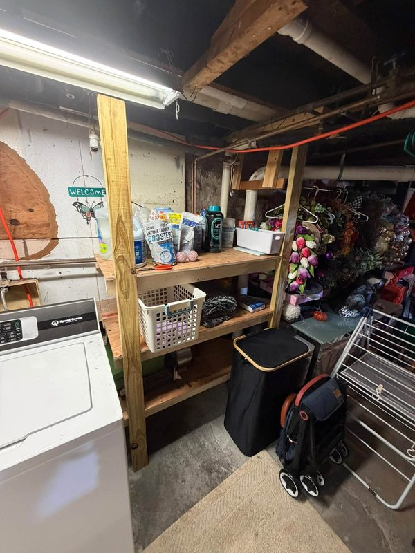
Basement shelving built in -
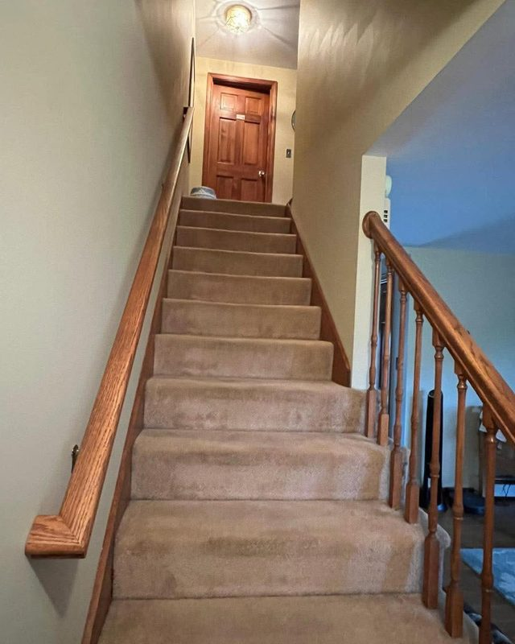
Stair railing and balusters -
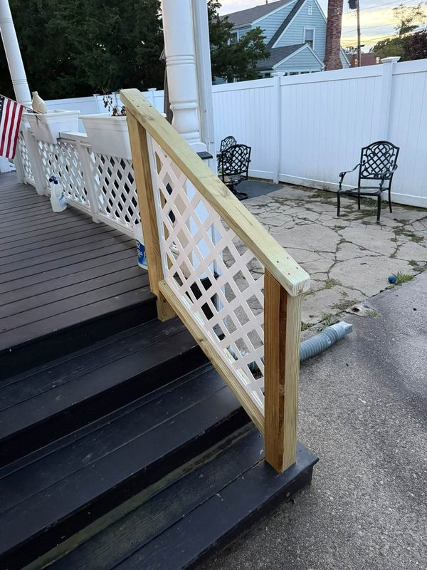
Deck stair railing -
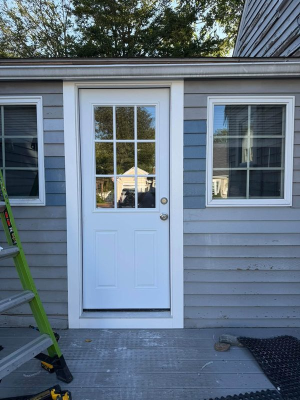
Exterior door replaced -
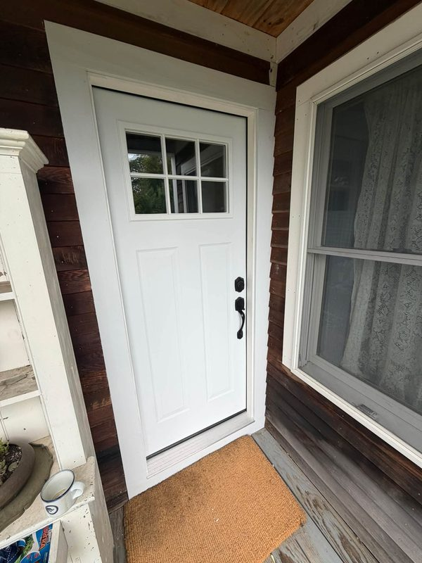
New entry door, trimmed and finished -
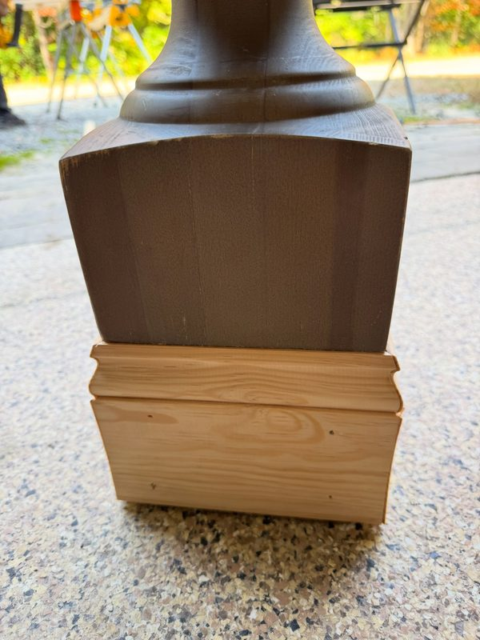
Table legs blocked up and trimmed


More photos go up regularly on the Facebook page.
About
Your neighbor
with a toolbox
Hammer & Dan is a handyman service based in Salisbury, Massachusetts, taking jobs across Essex County and north into New Hampshire.
The work covers what’s too small for a general contractor and too big for a Saturday afternoon — a door that won’t latch, a deck board gone soft, trim that never got finished, a floor that’s been on the list for years.
Every job is handled by the person who shows up to quote it. Work starts when promised, and the site gets cleaned up before it’s called done. That’s the whole pitch: small jobs, big results.